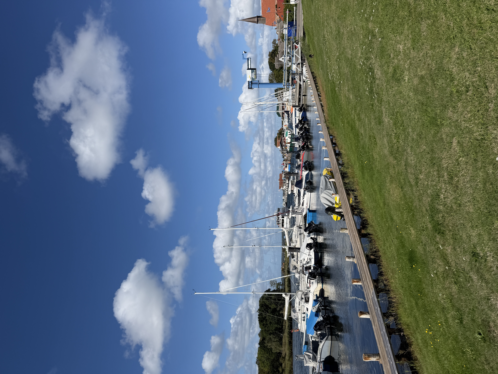
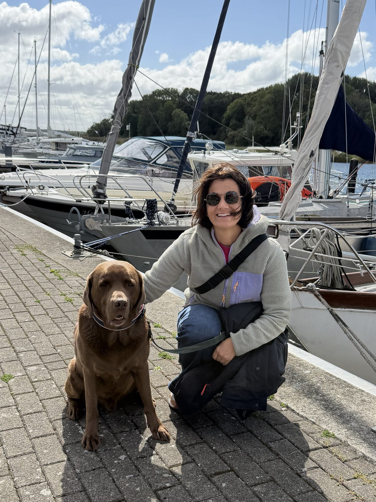
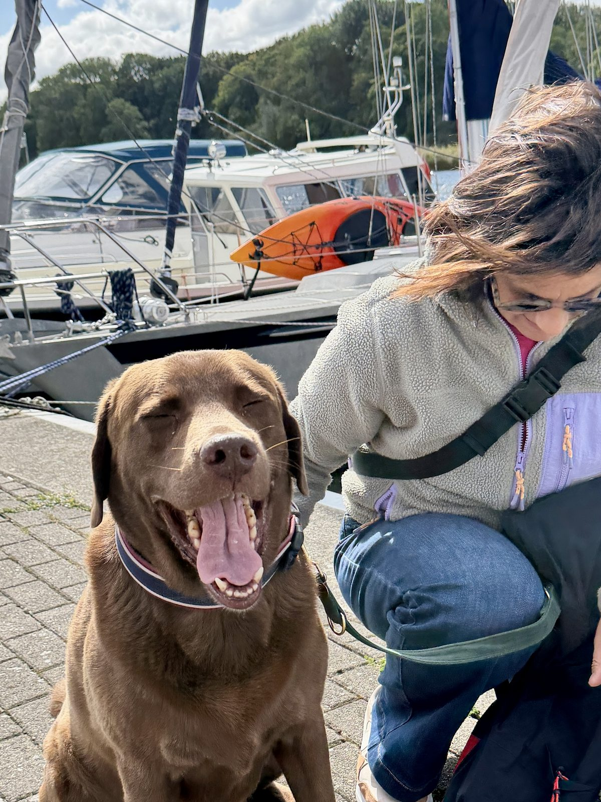
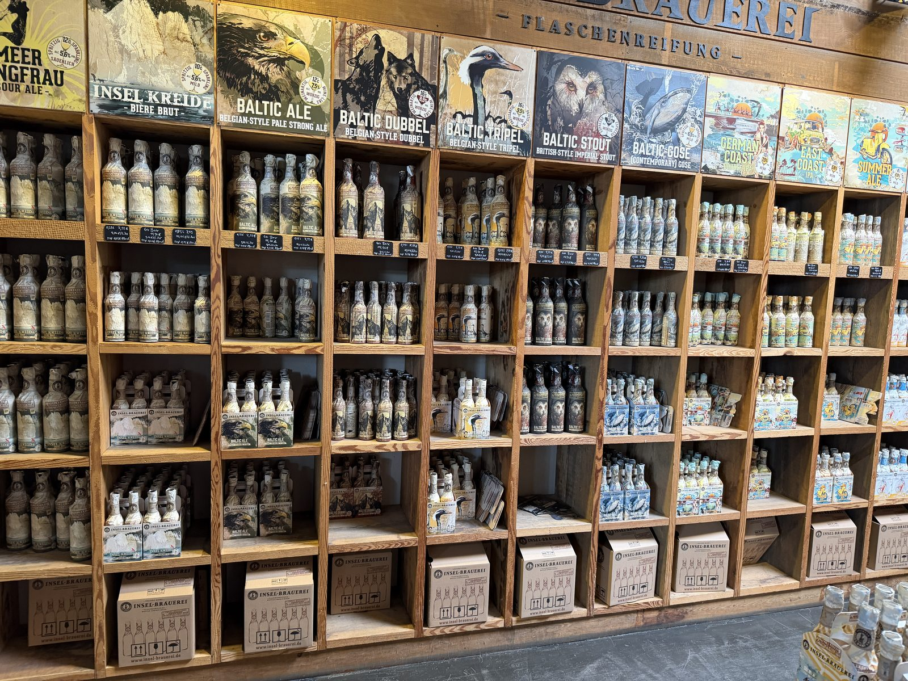
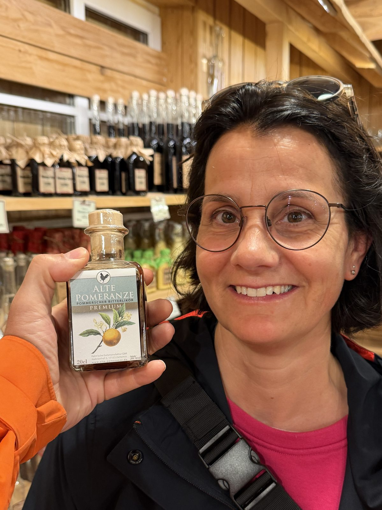

10. September 2026
Von Gingst zur Insel-Brauerei



Heute sind wir morgens von Sellin aus Richtung Westen nach Gingst gestartet – ein kleines, hübsches Dörfchen mit netten Häusern, in dem viel Keramik und selbstgemachte Deko angeboten wurde. Wir haben uns eine Kleinigkeit gekauft und sind weitergefahren nach Schaprode zum Yachthafen.
Dort haben wir uns umgeschaut – ein wirklich schöner Hafen – und mittags etwas gegessen. Anschließend ging es weiter zur Insel-Brauerei in Rambin, wo wir im Hofladen noch ein bisschen gestöbert haben, unter anderem an der "Alten Pomeranze", einem pommerschen Bitterlikör. Zum Abschluss sind wir wieder zurück Richtung Baabe gefahren.

